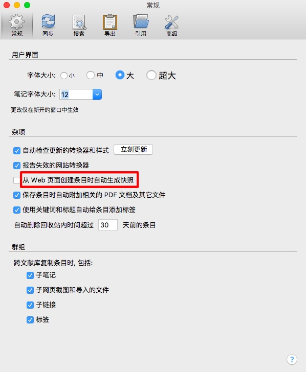
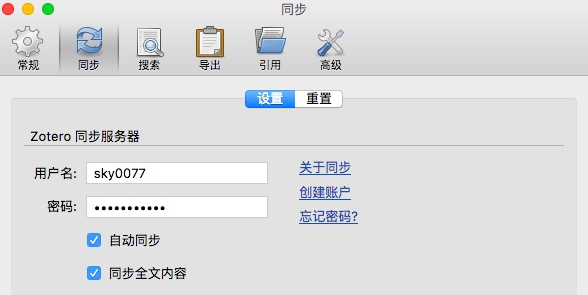
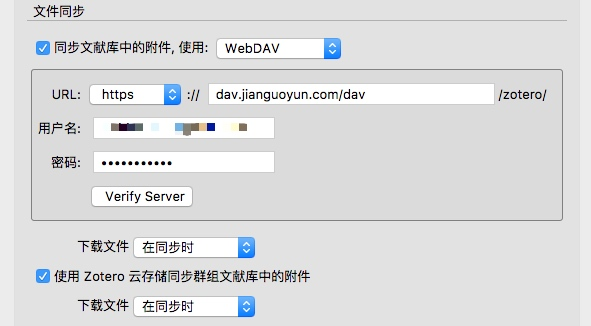
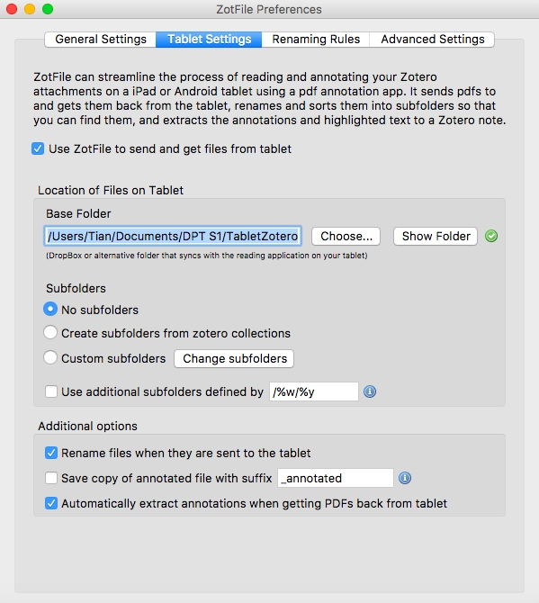
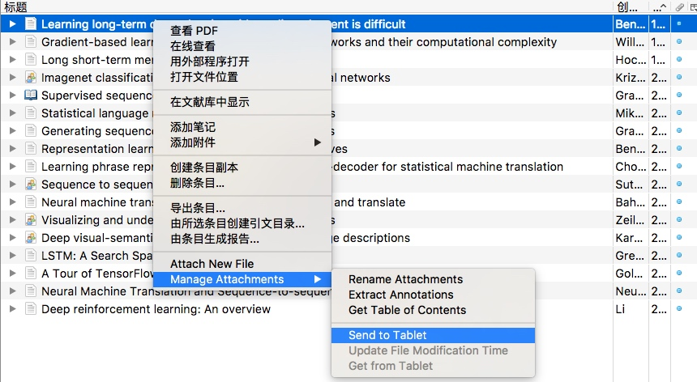
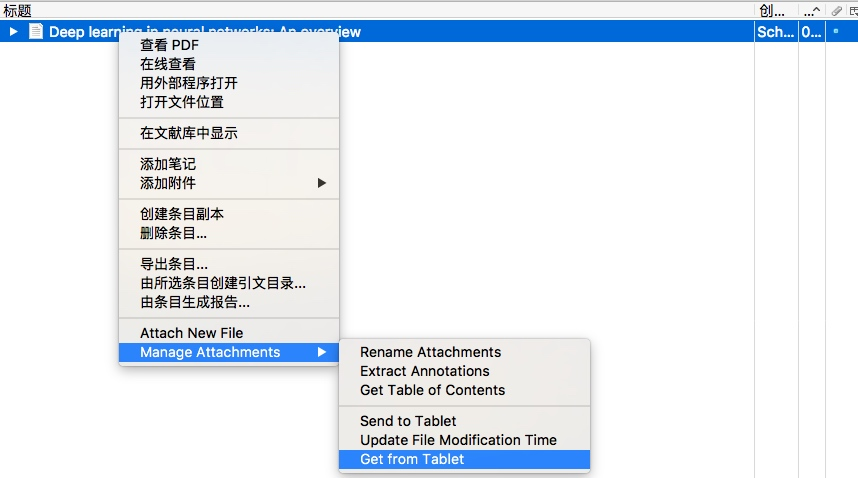
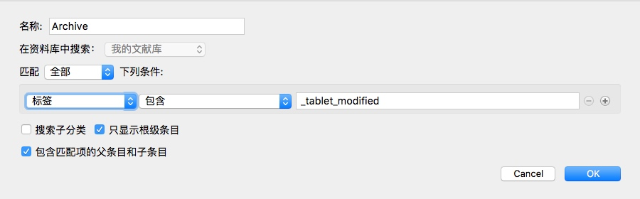
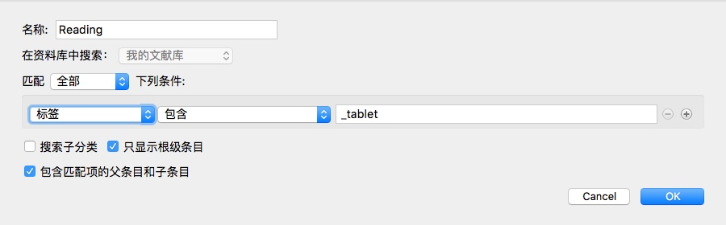
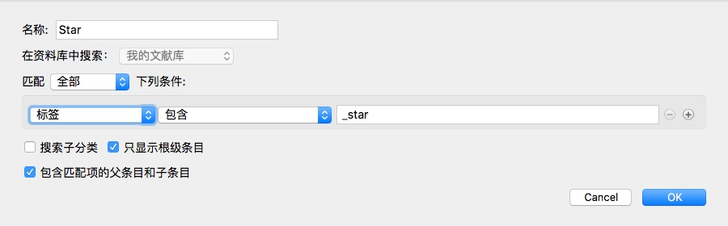
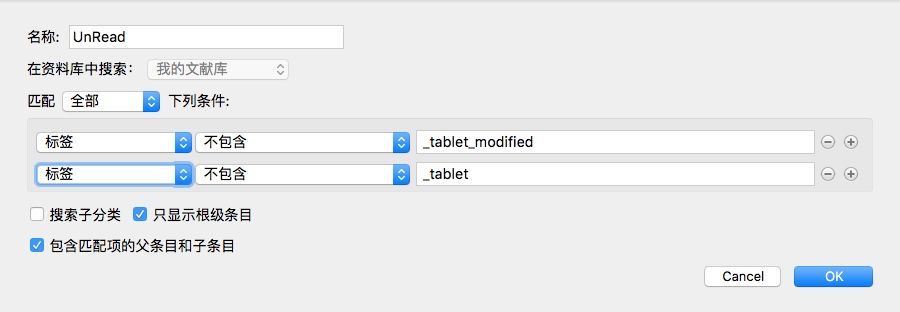

前两天狠了狠心花高价买了一个二手DPT S1。在学校的时候就对这款神器心水许久，一直未舍得也无力购买。工作后有了点闲钱，考虑到自己的工作性质需要阅读大量的文献，有一款电纸书不仅携带方便不伤眼，笔记什么的也更易于保存，便打算除一除草。孰料去年年底Sony宣布DPT无限期停产，S1的价格更是不降反升，全新品的价格涨幅直接飙过了100%！（Sony大法果然是最佳的理财神器。）然而架不住心里欲求不得的碎碎念，只好在一家淘宝店铺花了9000大洋购入一台二手机器。所幸机器成色较好，几乎看不出使用的痕迹。
既然入了这台“Paper”神器，便要善于利用，尽最大可能发挥它的便捷和长处。这篇博客就是介绍如何用DPT S1结合文献管理软件Zotero打造自己阅读文献的WorkFlow。
Zotero的基本设置
Mac上可选择的文献管理软件有很多。商业软件有Papers，免费软件有Mendeley。而我之所以选用Zotero这款轻量级的开源软件，是被其丰富的第三方插件库以及开放的WebDav同步接口所吸引。
简单说一下Zotero的基本设置。
打开Zotero（Mac客户端）的首选项，首先是常规界面的设置。这里没有什么好说的，选择默认的设置即可。我一般会取消勾选“从Web页面创建条目时自动生成快照”的选项。

接下来是同步的设置。Zotero的同步机制分为独立的两部分：Data Syncing和File Syncing。其中，前者负责文献库里除附件以外所有元数据的同步，例如文献条目，添加的笔记和标签等。借助于该同步机制，用户可以在任何一台装有Zotero客户端或是浏览器的电脑访问和管理自己的文献库。更值得称赞的是，Zotero的官方服务器为这部分数据的同步提供了免费的无限制的稳定可靠的服务。你只需要在zotero.org上注册一个账号，然后在首选项的同步面板里做好相应的设置即可。

文献库中附件的同步则需要单独的配置。Zotero默认提供了300MB大小的文件存储空间——你也可以通过付费升级这个空间的大小。此外，Zotero还提供了WebDav的同步接口。国内用户推荐使用坚果云进行文件同步。
注册一个坚果云账号，然后在同步面板填入相应的账号信息：

Zotero会在第一次同步时在坚果云的根目录下建立一个zotero的目录存储文献库里的附件。如果出现同步冲突，用户可以手动选择接受本地或是远程的数据库。
关于Zotero的基本设置就介绍这么多。更多高级的使用（例如将Zotero作为一个统一的知识管理工具），可以参考阳志平的博客上的介绍。
Zotfile插件和DPT S1的基本设置
Zotfile是一款开源的用于管理Zotero PDF附件的插件。它提供了包括同步Zotero文献库和移动阅读器（例如DPT S1），提取在移动阅读器上标注的文献笔记信息等在内的多种扩展功能。这个插件极大地提升了DPT S1的使用体验，更成为了我选择Zotero作为我的文献管理软件的主要原因。
Zotfile的安装很简单。下载并压缩Github上Zotfile的最新源码，重命名为xpi文件，导入到Zotero里即可。
下面简单介绍一下Zotfile的基本设置。
打开Zotfile的控制面板，里面有四个tab页面。我们主要关心第二个tab页面：Tablet Settings。首先勾选上“Use ZotFile to send and get files from tablet”选项，此时Zotfile会提示你将建立两个检索条件以跟踪发送到tablet上的文件。点击“OK”确认即可。然后，在下面的“Base Folder”里选择一个同步盘目录（注意路径里不要包含中文字符）。这个目录也是要在DPT S1上能够访问的目录。因此，我再次选择了支持WebDav的坚果云作为同步盘的服务商。关于DPT S1上WebDav的设置，这里就不再赘述。

Zotfile实现Zotero与DPT S1同步的流程如下。右键选中文献库里的一个条目，单击“Manage Attachments -> Send to Tablet”后，Zotfile会给该条目打上一个“_tablet”的标签，同时对该条目对应的附件按预设好的规则重命名，并复制到之前设置的坚果云同步目录下。此时，在DPT S1上打开这个同步路径，便可以进行文献的阅读了。

取回文件时，依然右键选中要取回的条目，单击“Manage Attachemnts -> Get from Tablet”，此时，Zotfile会用同步盘里的文件覆盖Zotero里的附件，提取文件里的标记到对应条目的note里，并给该条目打上一个_modified的标签。关于标签的作用后面会有说明。

打造自己的文献管理库
最后，简单介绍一下自己是如何使用Zotero进行文献管理的。
文献的管理也是我的知识管理体系的一部分。因此，轻类目，重检索，是我在管理文献时的一个基本理念。我没有按照文献的Topic将文献划分到不同的类目下，而是建立了四个智能检索：
Archive：归档所有读过的文献，也即带有“_modified”标签的文献。
Reading：发送到DPT S1上正在阅读的文献，也即带有“_tablet”标签的文献。
Star：打上"_star"标签的高质量文献。
UnRead：所有待读的文献。

这样，我不必过多的去考虑一篇文献应该被归类在哪个主题类目下。使用时，也主要通过标签和全文检索来快速定位到目标文献。